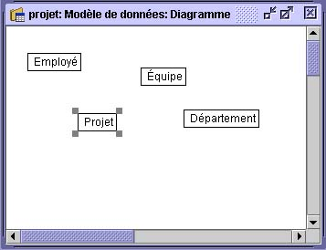

Ajouter des tables et des colonnes
 Ajouter des tables
Ajouter des tables
Une table est une représentation bidimensionnelle de tout objet abstrait
ou concret et dont les caractéristiques sont décrites par les colonnes
et les occurrences.
Lorsque vous créez une table, Open ModelSphere lui donne automatiquement
le nom par défaut Table. Nous vous recommandons de nommer vos tables aussitôt
que vous les avez créées. Ainsi, vous éviterez toute confusion lorsque le schéma se
complexifiera. Pour ce faire, utilisez la fonction d’édition graphique du contenu de la
table.
Pour créer une table :
- Choisissez l'outil Création de table dans la barre d’outils Création relationnelle
et cliquez à l’intérieur de la fenêtre du diagramme.
- Double-cliquez sur le nom de la table, changez-le et appuyez sur Retour.
- Créez et nommez les tables tel que démontré dans le diagramme suivant.

Pour créer plusieurs tables
sans chaque fois sélectionner
l'outil, double-cliquez sur
l'outil Table, il deviendra en
sélection permanente.
Quand vous aurez terminé,
double-cliquez l’outil maître.
Vous pouvez changer le nom d’une table et ajouter d’autres informations dans la fenêtre
de Propriétés de cette table. Cliquez à droite sur la table et choisissez Propriétés.

 Ajouter des colonnes
Ajouter des colonnes
Une colonne sert à caractériser une table.
Typiquement, une colonne contient, au maximum, une valeur. Chaque table doit contenir
au moins une colonne. Open ModelSphere permet l’édition à même le graphique,
rendant ainsi possible l’ajout, la suppression ou la modification de colonnes.
N’oubliez pas, quand vous créez une colonne, Open ModelSphere lui assigne
automatiquement un nom par défaut : Colonne.
- Cliquez avec le bouton droit la table sur laquelle vous désirez ajouter des
colonnes et sélectionnez Ajouter une colonne du menu contextuel.

Pour ajouter des colonnes de façon répétitive, éditez le nom de la colonne et appuyez sur CTRL et RETOUR simultanément
- Entrez un nom pour la colonne, ceci écrasera le nom par défaut fourni par
l’application, et appuyez sur la touche Retour.
-
Ajoutez d'autres colonnes de la même façon (tel qu’illustré dans le diagramme suivant).

Vous pouvez aussi modifier ou supprimer une colonne en employant la fonction d’édition
graphique de Open ModelSphere. Pour supprimer une colonne, cliquez sur
cette dernière avec le bouton droit et choisissez Supprimer dans le menu contextuel.